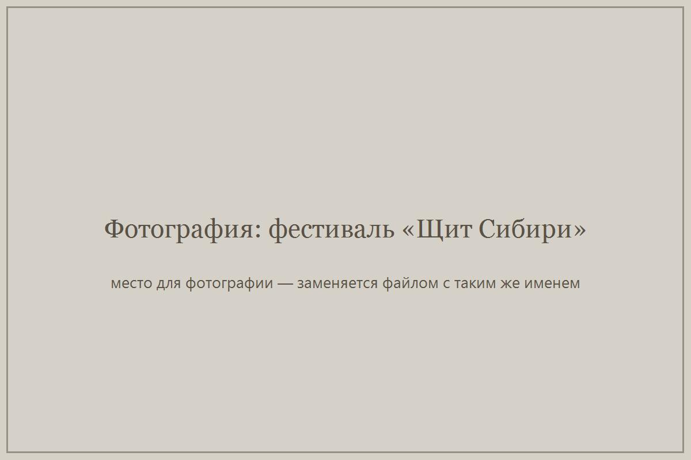
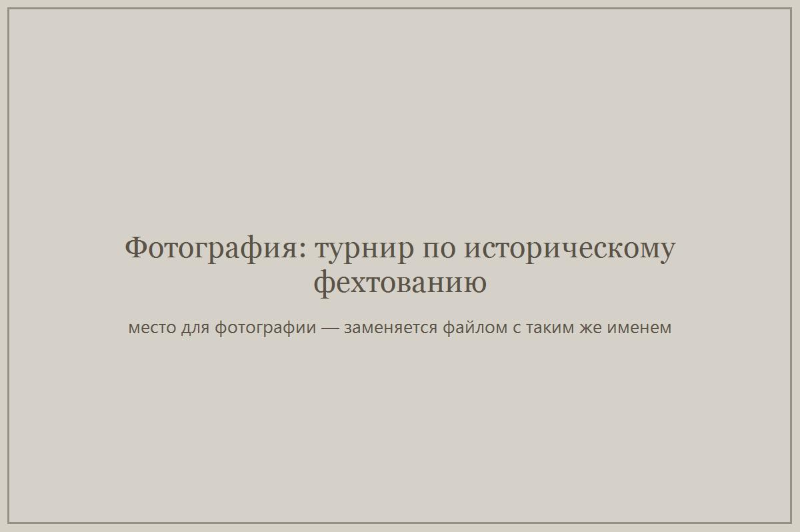
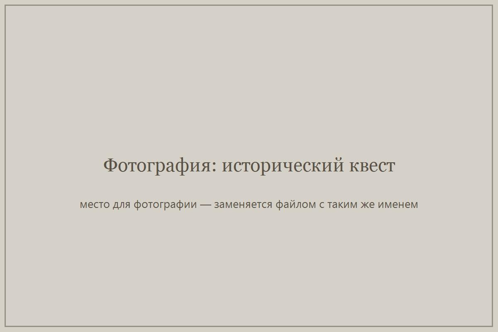
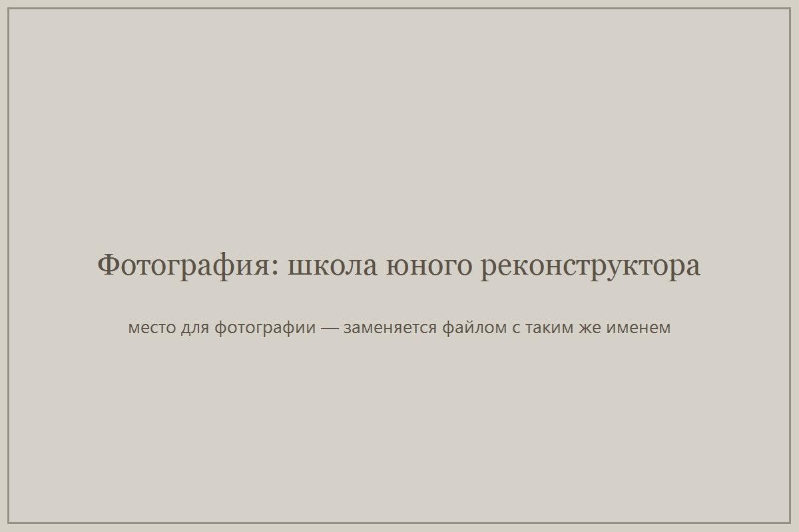

Реализованные проекты и программы
Девять проектов организации — от первого фестиваля, проведённого на собственные средства, до городского фестиваля живой истории с исследовательским замером. Все проекты реализованы в запланированные сроки, показатели соответствуют заявленным.
Комплекс историко-просветительских мероприятий «Щит Сибири. Диалог с прошлым»
Фестиваль живой истории прошёл в Омске в День города на постоянной площадке: для гостей работали тематические площадки от Древней Руси до XX века, турнир по историческому фехтованию, ремесленные мастерские и исторический квест с маршрутными картами. Продолжением фестиваля стали неделя стационарной работы площадки «Лагерь живой истории» в парке и интерактивный лекторий для молодёжи. Для молодёжи 14–25 лет были организованы промо-площадки проекта на «Библионочи» в библиотеке им. А. С. Пушкина и на «Ночи музеев» в мультимедийном историческом парке «Россия — моя история. Омская область», их посетили более 200 человек.
Подтверждающие материалы: фотофиксация, маршрутные квест-карты, списки участников от партнёрских организаций, данные Департамента культуры Администрации города Омска, публикации в СМИ.
Историко-образовательный квест «Ткань времени»
Мероприятия проекта впервые прошли в трёх регионах: историко-просветительские квесты состоялись в Омской, Свердловской и Челябинской областях на базе крупных фестивалей исторической реконструкции. Основой проекта стала мобильная площадка «музей живой истории» под открытым небом, новым акцентом — исторические ремёсла и мастер-классы внутри крупного мероприятия.
Гостей мероприятий проекта в трёх регионах — более 14 000 человек, участников исторического квеста — 2 000. Полученный опыт и созданная материальная база стали основой следующего проекта — ремесленной мастерской «Умелец», представленной на омском квесте «Ткань времени» в августе 2022 года.
Историческая ремесленная мастерская «Умелец»
На базе мультимедийного исторического парка «Россия — моя история. Омская область» создана ремесленная мастерская исторического гончарного и столярного дела. Занятия вели мастера — участники общероссийского движения «Клубы исторической реконструкции „Росрекон“», с использованием копий старинных инструментов.
Работа шла в мини-группах по 4–6 человек: 60 ознакомительных мастер-классов в промо-период посетили 300 человек, в основном периоде прошли 10 серий занятий из трёх уроков — 40 участников довели работу до готового изделия (табурет, кружка). Локацию «Умелец» на историко-образовательном квесте «Ткань времени» посетили 600 человек; вышли 2 сюжета на телевидении и 12 публикаций в СМИ.
Проект стал первым опытом работы организации с семейной аудиторией и с малыми группами: наиболее активные участники сформировали мини-группы и продолжили занятия. Мастерская использовалась в следующих проектах организации.
Комплекс мероприятий «Школа юного реконструктора»
Создан молодёжный клуб исторической реконструкции из учащихся старших классов школ Омска. Полугодовую программу составили теоретические занятия с элементами самостоятельной работы и прикладные активности: воссоздание костюма и образа, освоение ремесленных навыков, историческое фехтование и стрельба из традиционного лука — по периоду зарождения древнерусской государственности IX–XI веков.
Программу завершили 16 школьников; большинство направило заявления на вступление в общероссийское движение «Клубы исторической реконструкции», участники составили план работы клуба на год вперёд и продолжили занятия под кураторством организации. Выпускники выступили соорганизаторами историко-просветительского квеста «Ткань времени» в торгово-развлекательном центре «Мега»: шесть тематических площадок, 100 школьников прошли маршрутные карты, площадку посетили 2 000 человек. Совместно с выпускниками проведены 10 уроков живой истории на базе парка «Россия — моя история» для 200 школьников. В СМИ и тематических пабликах — 10 упоминаний, 30 положительных отзывов выпускников и гостей. Занятия шли в мастерской, созданной в рамках проекта «Умелец».
Историко-образовательный фестиваль-квест «Прошлое говорит»
Впервые фестиваль прошёл в формате исторического квеста в историческом центре Омска и на пешеходных транзитах: шесть тематических площадок иллюстрировали исторические периоды от эпохи бронзы до Великой Отечественной войны. Игровое взаимодействие собрало как горожан, пришедших специально на событие, так и случайных прохожих.
Площадки фестиваля посетили более 5 000 человек, в историческом квесте приняли участие более 200 человек. Проведено 30 уроков живой истории, их посетили 1 200 школьников; онлайн-трансляции с площадок собрали более 4 000 просмотров; по итогам проекта вышло 40 публикаций в СМИ.
Комплекс мероприятий «Музей живой истории»
Проект реализован в условиях противоэпидемиологических ограничений: мероприятия дважды переносились и меняли формат. Летнюю площадку «Музей живой истории» под открытым небом провели осенью 2020 года под крышей исторического парка «Россия — моя история», а интерактивные площадки «Лагеря живой истории», запланированные к фестивалю «Щит Сибири» 2020 года, перенесли на сентябрь 2021 года.
В этих условиях появились новые форматы работы с аудиторией: экскурсии для мини-групп по предварительной записи и онлайн-трансляции с площадок. Итоги: более 1 000 школьников посетили уроки живой истории; в работе интерактивной площадки «Музей живой истории» приняли участие более 400 человек; более 400 гостей посетили «Лагерь живой истории» в режиме экскурсий по предварительной записи, более 19 000 человек присоединились к онлайн-трансляциям; по итогам проекта вышло более 40 публикаций в СМИ.
Военно-исторический фестиваль «Щит Сибири» (2019)
Первый фестиваль организации, получивший президентский грант. Программа развернулась от турнира к взаимодействию участников с гостями: впервые был организован «Лагерь живой истории», где гости знакомились с бытовой стороной жизни минувших эпох, проведены игры со зрителями, массовые боевые сходы в поле и штурм крепости; впервые приглашены иногородние участники с оплатой дороги.
Фестиваль посетили более 5 000 гостей, в нём приняли участие более 150 реконструкторов; уроки живой истории посетили 700 школьников; вышло 50 упоминаний в СМИ; страницу фестиваля во «ВКонтакте» за неделю фестиваля посетили более 5 000 человек.
Проект «Интерактивная история Сибири» — участие в качестве партнёра
Организация участвовала в проекте как партнёр: готовила и проводила уроки живой истории для школьников Омска — практические занятия, на которых исторические периоды, быт, воинское дело и ремёсла показываются через подлинные и воссозданные предметы и работу реконструкторов.
Проект получил поддержку Фонда президентских грантов во втором конкурсе 2018 года и реализован на территории Сибирского федерального округа: Новосибирская, Омская, Томская, Кемеровская, Иркутская области, Красноярский и Алтайский края. Участие в проекте стало для организации первым опытом работы в крупном межрегиональном проекте и основой собственных уроков живой истории в проектах 2020–2021 годов.
Военно-исторический фестиваль «Щит Сибири» 2018
Фестиваль стал первым мероприятием организации, выстроенным в логике социального проекта. К спортивной части (турнир по историческому фехтованию) добавились форматы для зрителей: выступления творческих коллективов, ярмарка, показательные выступления школ исторического фехтования, а также впервые появился полевой лагерь клубов исторической реконструкции, где зрители могли пообщаться с участниками.
Фестиваль посетили 2 500 зрителей, в нём приняли участие более 50 реконструкторов. С этого фестиваля организация перешла к проектной работе и в следующем году получила первый президентский грант.
Фотографии с наших мероприятий
Все альбомы и свежие снимки — в нашей группе vk.com/sib_shield.





